Project 5 — Fun With Diffusion Models
CS 180 — Introduction to Computer Vision & Computational Photography
Part A — The Power of Diffusion Models!
In this part of the project I explored DeepFloyd IF and diffusion end-to-end. Starting from prompt embeddings and
the forward noising process, I worked up to denoisers driven by a large UNet, classifier-free guidance,
image-to-image translation, inpainting, and even illusion-style generations such as visual anagrams and
hybrid images. All experiments in this section were generated with a fixed random seed of 17
so that results are reproducible.
Prompt Embeddings & First Impressions
DeepFloyd IF is conditioned on CLIP-style text embeddings. To get a feel for how prompts steer the diffusion process, I generated samples at different numbers of denoising steps while holding the seed fixed. Fewer steps act like a coarse sampler; more steps refine details, textures, and global coherence.
Prompt: “a photo of dinosaurs climbing the Berkeley campanile”
The campanile initially does not look accurate, but becomes more recognizable as steps increase.
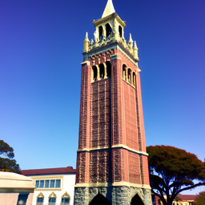
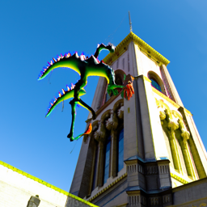

Prompt: “a photo of a dog surfing”
The dog, surfboard, and water stabilize quite quickly with all 3 images being accurate and consistent.
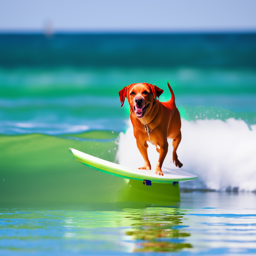


Prompt: “a tiger drinking tea with the queen”
Weirdly this image was most accurate at its fewest steps and then seemed to get worse with the additional steps.
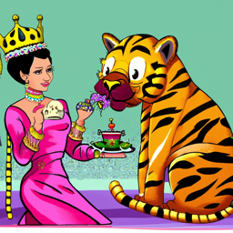


Sampling Loops
To understand diffusion, I looked at both the forward process (corrupting an image with noise) and the reverse process (denoising with the UNet). Each subsection below visualizes a different way of moving along the diffusion trajectory.
1.1 Forward Process — Adding Some Noise
I implemented im_noisy = forward(im, t), which draws Gaussian noise and uses the closed-form
forward diffusion equation \(x_t = \sqrt{\bar\alpha_t} x_0 + \sqrt{1-\bar\alpha_t}\,\epsilon\).
As \(t\) grows, the Campanile image quickly loses structure and becomes nearly pure noise.
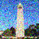
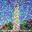
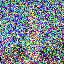
1.2 Classical Denoising
As a baseline, I treated the forward-diffused images as ordinary noisy photographs and tried to denoise them with Gaussian blur. While blur can suppress high-frequency noise, it cannot reconstruct the lost structure, and the results become washed-out and smeared.
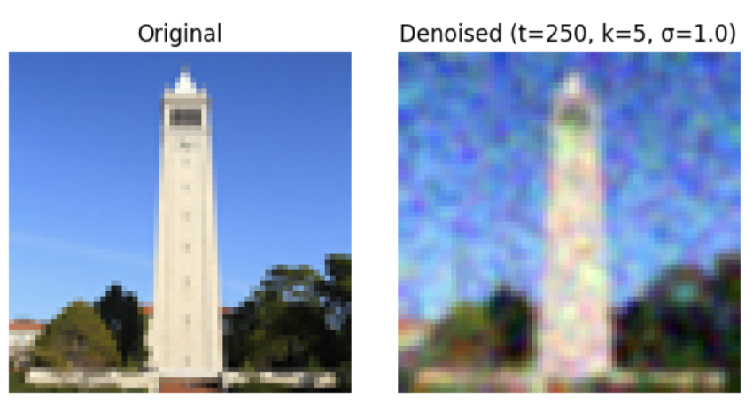
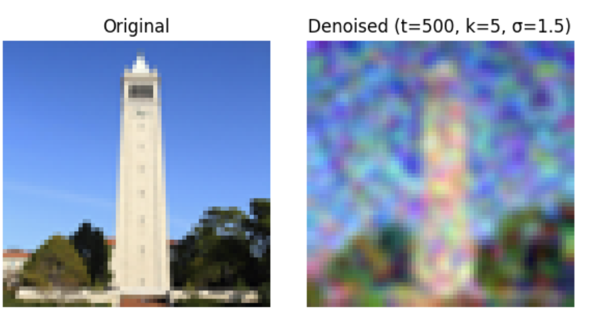
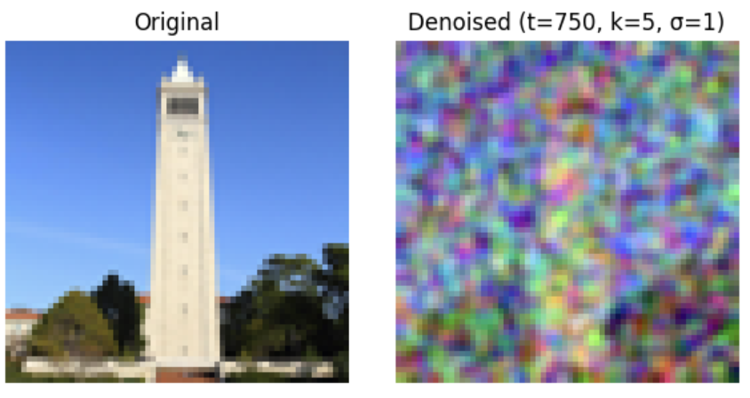
1.3 One-Step Denoising
Next I used the pretrained UNet to predict the noise \(\hat\epsilon_\theta(x_t, t)\) at a single timestep and analytically recovered \(\hat x_0\). This one-step denoiser already produces a much more plausible reconstruction than classical filtering, but artifacts remain because diffusion training assumes a full reverse process, not a single jump from \(t\) to 0.
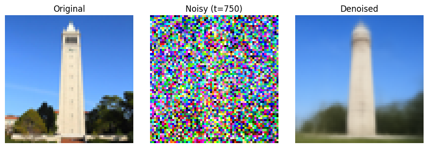
1.4 Iterative Denoising (i_start = 10)
Here I implemented an iterative sampler: starting from a moderately noisy \(x_t\), the model repeatedly applies the DDPM reverse update to walk toward lower noise levels. At each step, the UNet predicts noise and we sample from the posterior over the next timestep. This produces a much cleaner reconstruction and shows the image gradually sharpening over time.
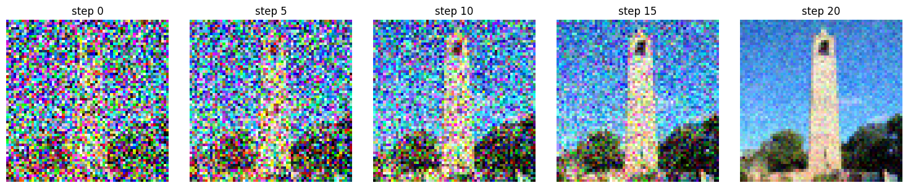
1.5 Diffusion Model Sampling
Using the same iterative sampler but starting from pure Gaussian noise instead of an existing image turns the denoiser into a generative model. The sequence below shows samples drawn from DeepFloyd IF using only text conditioning and the learned diffusion dynamics.
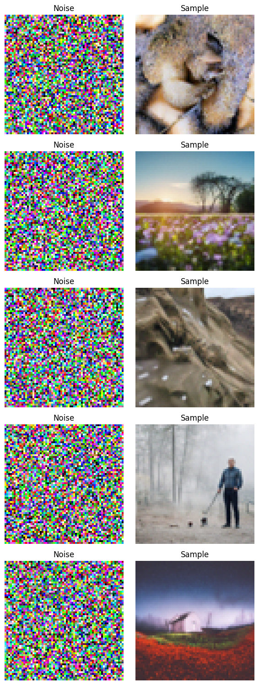
1.6 Classifier-Free Guidance (CFG)
Classifier-free guidance trades diversity for stronger prompt adherence. I implemented CFG by running the UNet twice—once with the prompt embedding and once with the null embedding—and combining the noise estimates with a guidance scale. Larger scales make images match the text more literally but can introduce artifacts or oversaturated colors.
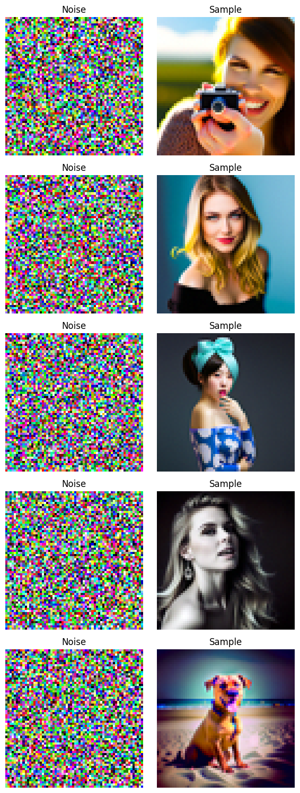
1.7 Image-to-Image Translation
Instead of sampling from pure noise, I can start from an existing image, diffuse it to a noisy intermediate timestep, and then denoise with a different prompt. This performs text-controlled edits while preserving coarse layout and color structure of the original.

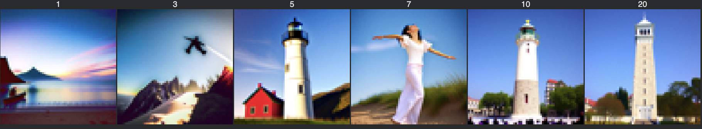
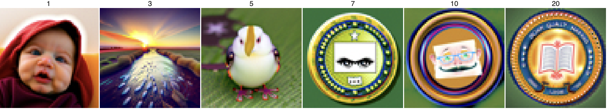
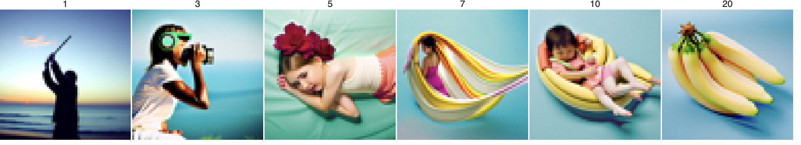
1.7.1 Editing Web & Hand-Drawn Images
I repeated the same procedure on my own sketches and on web images. Diffusion is surprisingly robust: even crude line drawings become detailed paintings when denoised with rich prompts, and stock photos can be stylized or reinterpreted while preserving global structure.
Hand-drawn images
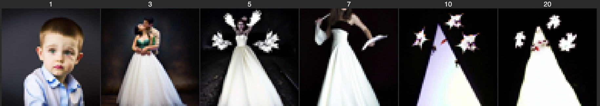
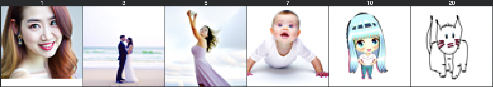
Web image
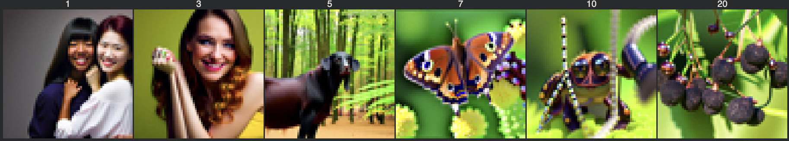
1.7.2 Inpainting
For inpainting, I diffuse the original image, then at each reverse step I overwrite the unmasked region with the noised original and only allow the diffusion model to sample inside the mask. This lets the model hallucinate new content while keeping the rest of the picture fixed.
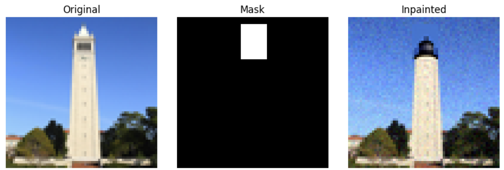
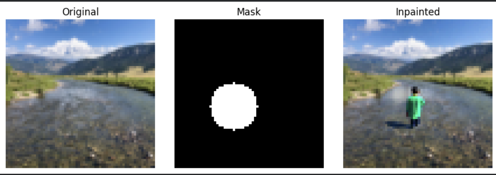
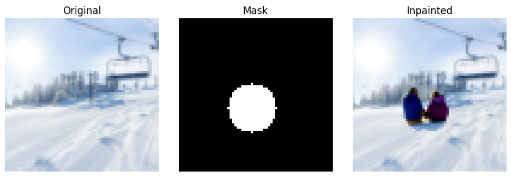
1.7.3 Text-Conditioned Image-to-Image Translation
Finally, I combined inpainting-style control with strong text prompts to push images toward new semantics. By diffusing an input and denoising with a different prompt, the model preserves coarse layout but replaces objects in a text-driven way.
Original images
Translated results
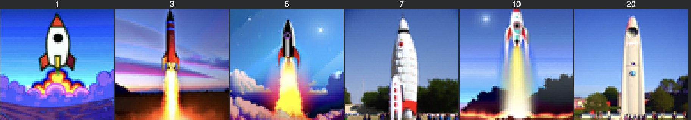
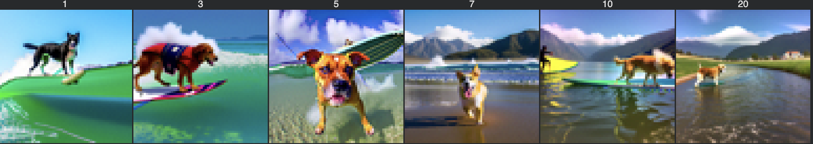

1.8 Visual Anagrams
Visual anagrams are images that look like one thing upright and another thing upside-down. I implemented the flip-illusion sampler, which denoises both the image and an upside-down copy under different prompts, flips one of the noise estimates back, and averages them at each step.
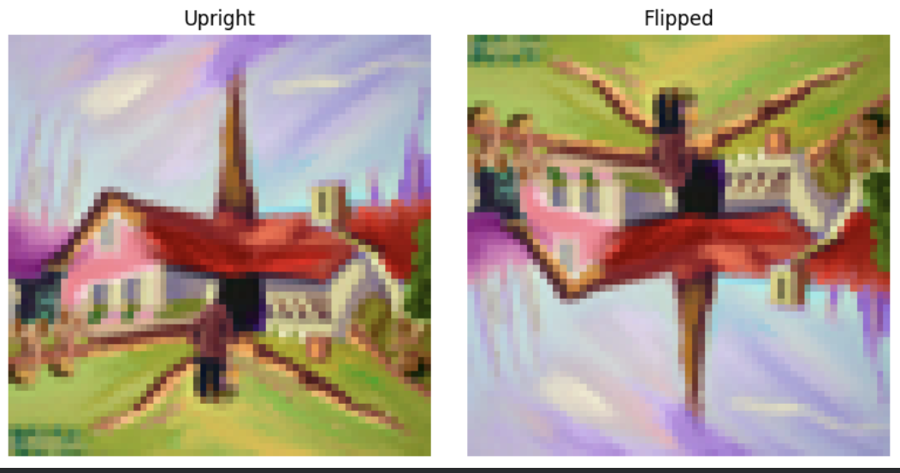
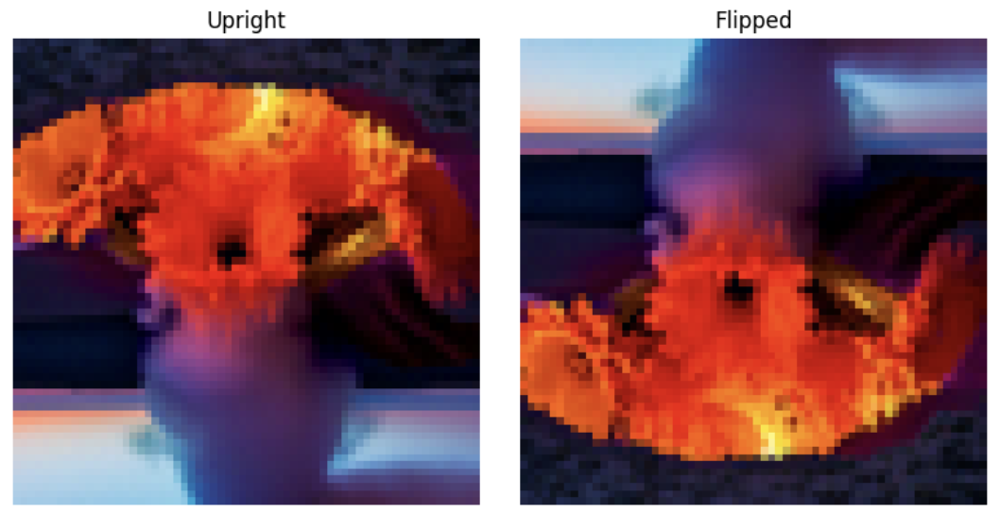
1.9 Hybrid Images
Inspired by classical hybrid images, I used factorized diffusion to blend prompts in frequency space: low frequencies come from one prompt and high frequencies from another. The UNet is run twice to get two noise estimates, which I decompose using a large Gaussian blur before recombining. Up close, you perceive the high-frequency concept; from far away, the low-frequency concept dominates.
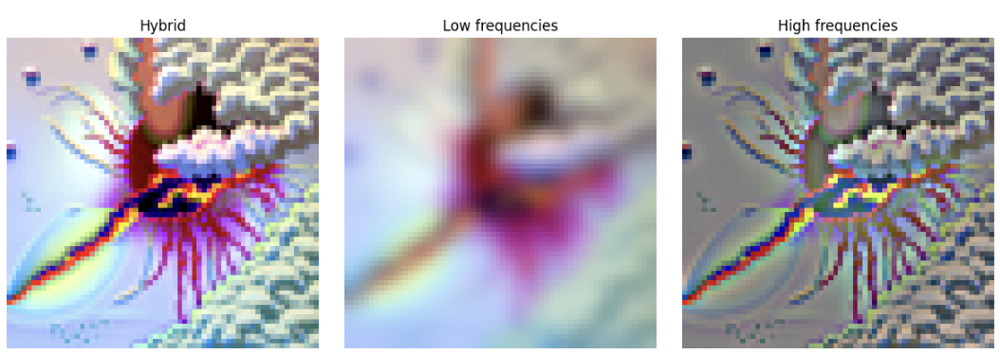
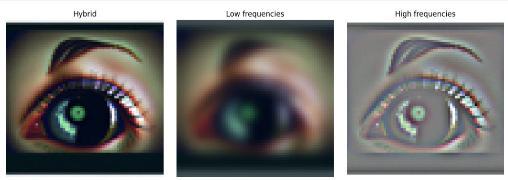
Additional Illusions
Three Views
I extended the flip-illusion idea to three prompts simultaneously: upright, upside-down, and left-right flipped. At each timestep I ran the UNet on the original, vertically flipped, and horizontally flipped images with different prompts, un-flipped the corresponding noise estimates, and averaged all three. The result is a single image that supports three consistent interpretations depending on how you orient it.
Prompts: “a realistic vase of flowers”, “an oil painting of a ballet dancer”, and “a photo of a volcano”.
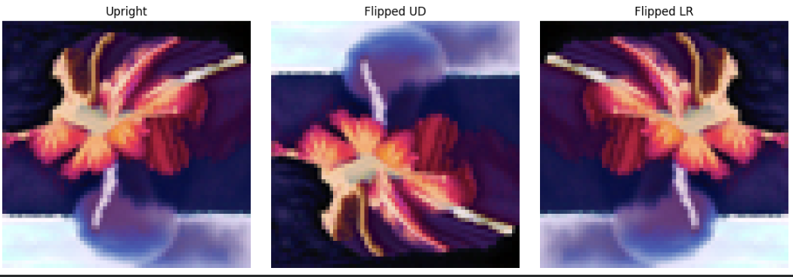
Negatives
I also implemented a “negative” illusion where the model is asked to produce an image whose photographic negative evokes a different prompt. This is done by running diffusion on both the image and its negated version and crafting a shared noise estimate that is consistent under the sign flip.
Prompts: “a black and white photo of a woman” and “a black and white photo of a man”.
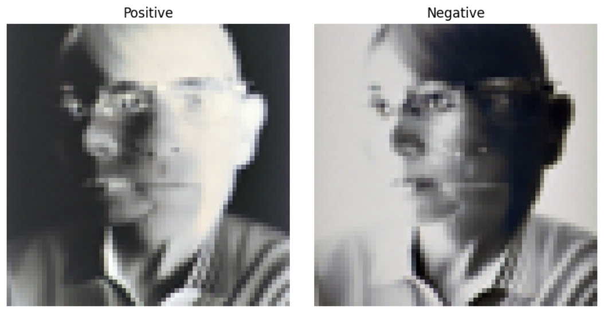
Course Logo
As a final fun application, I used a two-way visual anagram to design a logo that reads differently when flipped: one orientation emphasizes a playful Cal bear, while the other looks like a stylized camera. This was created with the same flip-illusion sampler but tuned for clean silhouettes.
Prompts: “a cool Cal bear” and “a camera”.
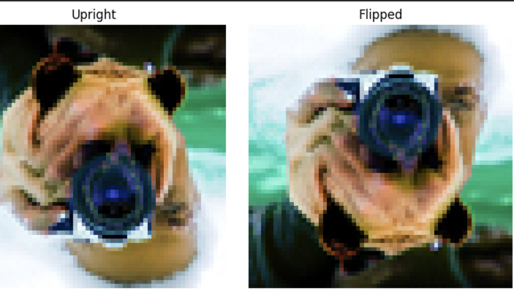
Part B — Training My Own Diffusion Models
In Part B I stepped away from DeepFloyd IF and trained my own diffusion-style models from scratch on MNIST. The goal was to mirror, in miniature, the building blocks used in large text-to-image models and to see how each modeling choice affects the learned denoiser and sampler.
UNet Architecture
I used a compact UNet tailored to \(28 \times 28\) MNIST digits. The encoder progressively downsamples the spatial resolution while increasing the number of channels, and the decoder mirrors this structure with skip connections that pass high-resolution details across the bottleneck. This keeps the model lightweight but expressive enough to capture digit structure and noise patterns.
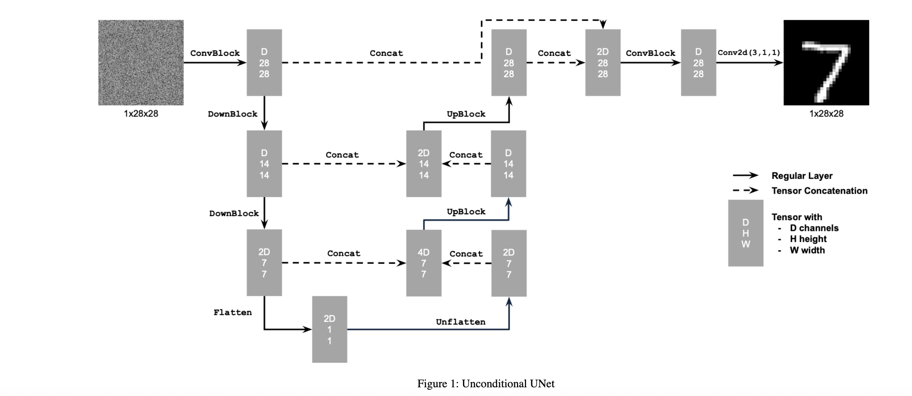
1.2 Training a Single-Step Denoiser
Before training, I visualized how Gaussian noise with different standard deviations \(\sigma\) alters the digits. As \(\sigma\) increases from 0.0 to 1.0, strokes become fuzzier, strokes break apart, and eventually the images collapse into pure noise. This gives intuition for how hard the denoising task becomes at higher noise levels.
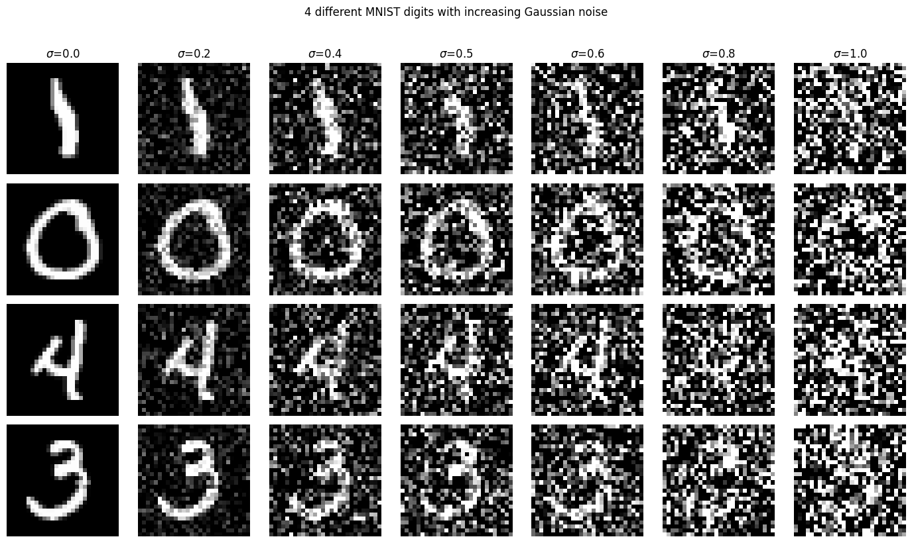
1.2.1 Training
I trained the UNet denoiser on MNIST for 5 epochs. Each mini-batch of digits \(x\) was corrupted on the fly with fixed-variance Gaussian noise \(\epsilon \sim \mathcal{N}(0, \sigma^2 I)\), producing noisy inputs \(z = x + \epsilon\). The network was supervised to predict the clean image \(x\) directly with a mean squared error loss \(\|f_\theta(z) - x\|_2^2\). With a batch size of 256, hidden dimension \(D = 128\), and Adam (learning rate \(10^{-4}\)), the model quickly learned to undo much of the corruption.
Qualitatively, after 1 epoch the denoised outputs are already recognizable but still a bit blurry and over-smoothed. By epoch 5, the model has sharpened the strokes and produces digits that are much closer to the originals.
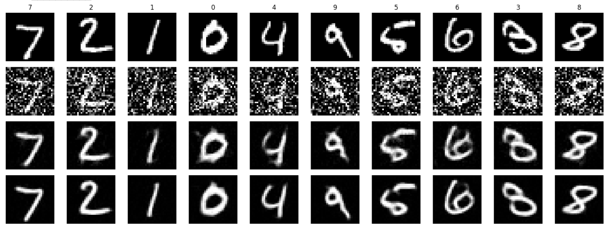
Over 5 epochs, the training loss decreases smoothly and roughly plateaus by the end, indicating that the UNet is converging on a stable mapping from noisy digits to their clean counterparts.
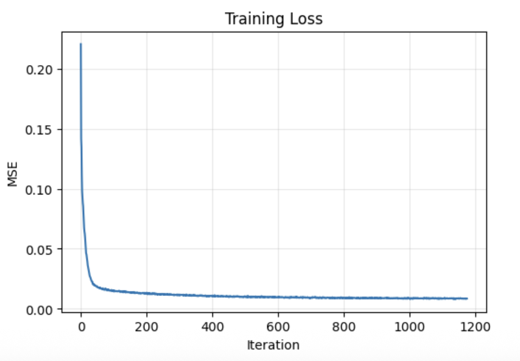
1.2.2 Out-of-Distribution Testing
The single-step denoiser was trained at one fixed noise level, but at test time we can feed it digits corrupted with many different \(\sigma\) values. To probe how robust the model is, I used the same set of test digits and varied \(\sigma\) from very small (almost clean) to very large (almost pure noise), then visualized the outputs.
Even though the model never saw these noise levels during training, it still produces meaningful reconstructions across a broad range. As \(\sigma\) becomes tiny, there is little to fix and the denoiser tends to leave the input mostly unchanged. As \(\sigma\) becomes very large, the input carries almost no recognizable structure and the model cannot fully recover the digit, but it still outputs something digit-like instead of pure noise.
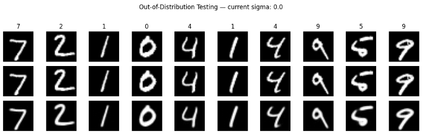
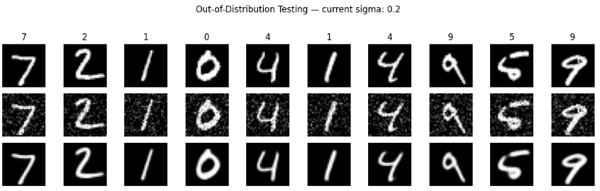
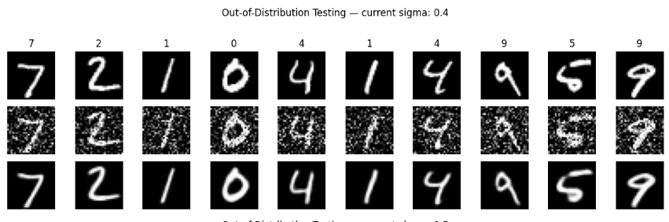
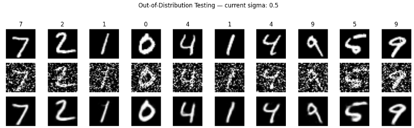
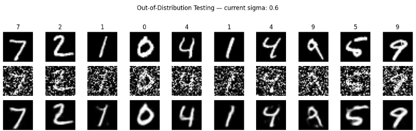
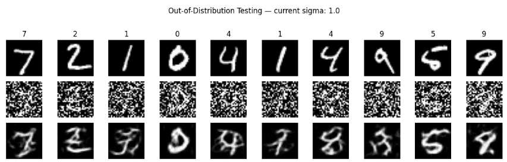
1.2.3 Denoising Pure Noise
To turn denoising into a purely generative task, we would like the model to start from only noise and hallucinate a plausible digit. Concretely, we sample a blank canvas \(z \sim \mathcal{N}(0, \sigma^2 I)\) with \(\sigma = 0.5\) and ask the network to map it directly to a clean digit \(x\). This is a much harder problem than cleaning up a noisy version of an actual digit, because there is no underlying structure in the input to latch onto.
I reused the same training setup as in 1.2.1, but instead of corrupting real digits, the inputs were pure noise samples \(z \sim \mathcal{N}(0, 0.5^2 I)\). The target outputs were real MNIST digits. After 1 epoch the outputs show faint digit-like blobs, and after 5 epochs the model produces more consistent shapes, but they still look like soft averages rather than crisp digits.
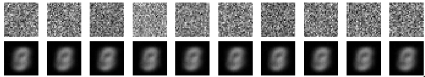
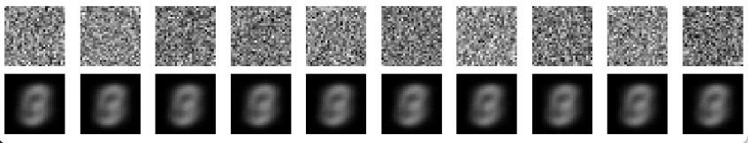
With an MSE loss, the “best” prediction for a given input is the average (centroid) of all training targets that the model thinks could correspond to that input. In the context of MNIST, that means the model is effectively trying to output the mean image over all plausible digits it has seen for similar inputs. When you feed it something that doesn’t look like any specific digit (like strong noise or an out-of-distribution input), the model has no clear match and instead falls back to something like the overall average digit it has learned. Averaging over many different digits washes out the distinctive strokes of each number, so instead of getting a crisp “3” or “7,” you get a blurry, blob-like amalgamation where the common structure of many digits overlaps—this is the centroid of the training images under the model’s learned representation.
The training loss curve still decreases as the model gets better at mapping noise to plausible digits, but the outputs never become as sharp as in the standard denoising setup, reflecting the inherent ambiguity of the task.
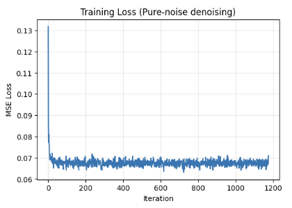
Part B.2 — Training a Flow Matching Model
The second half of Part B moves from discrete-time denoising to flow matching, where we train the network to predict a continuous-time velocity field that carries a simple prior (Gaussian noise) into the data distribution. Instead of predicting a clean image in one step, the UNet predicts how the image should change at each time \(t \in [0, 1]\).
2.1 Time Conditioning
To let the UNet know where it is along the flow, I added time conditioning. Each scalar timestep \(t\) is encoded with a small MLP into a time embedding, and this embedding is injected into the network through fully connected blocks (FCBlocks) that modulate intermediate feature maps. Intuitively, the UNet learns one shared architecture that behaves differently at early vs. late times.
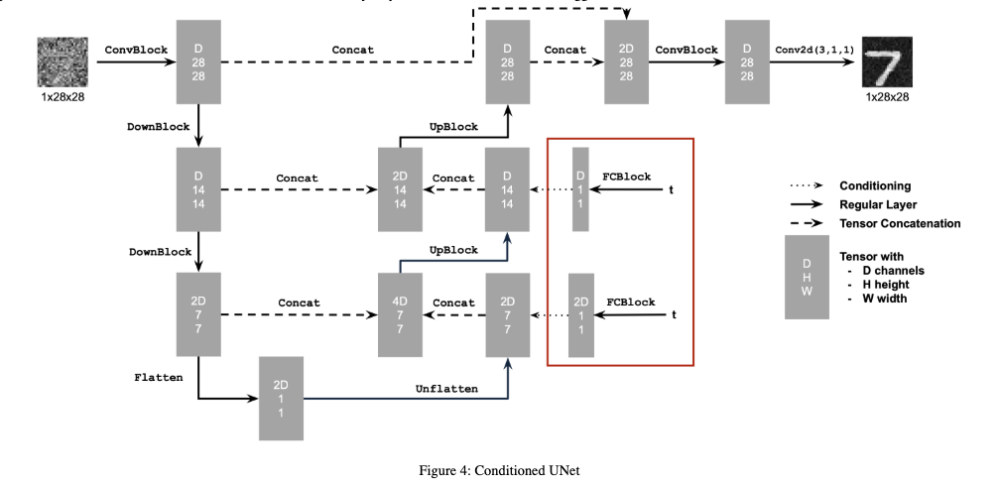
2.2 Training the UNet
For flow matching, we train the network to approximate an ideal velocity field that moves samples from a simple distribution to the data. A common setup is:
- Sample a clean digit \(x_1\) from MNIST.
- Sample a noise vector \(x_0 \sim \mathcal{N}(0, I)\).
- Sample a random time \(t \sim \mathcal{U}(0, 1)\).
- Interpolate \(x_t = (1 - t) x_0 + t x_1\).
The ideal velocity along this straight-line path is \(v^\star(x_t, t) = \frac{d}{dt} x_t = x_1 - x_0\), which does not depend on \(t\). The time-conditioned UNet \(v_\theta(x_t, t)\) is trained to minimize the mean squared error
\[ \mathcal{L}(\theta) = \mathbb{E}_{x_0, x_1, t} \Big[ \big\| v_\theta(x_t, t) - (x_1 - x_0) \big\|_2^2 \Big]. \]
Intuitively, the network sees points along interpolated segments between random noise and real digits, and learns how to “push” them in the right direction to reach the data manifold.
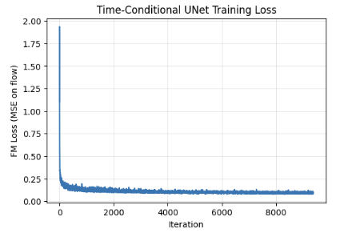
2.3 Sampling from the UNet
Once the flow-matching UNet is trained, we can generate digits by integrating the learned velocity field from time 0 to time 1. Sampling works as follows:
- Sample an initial point \(x_0 \sim \mathcal{N}(0, I)\).
- Choose a sequence of times \(0 = t_0 < t_1 < \dots < t_K = 1\).
- Use an ODE solver (Euler integration here) to update \(x_{k+1} = x_k + (t_{k+1} - t_k)\, v_\theta(x_k, t_k).\)
After integrating up to \(t = 1\), \(x_K\) should lie near the data distribution and look like a clean MNIST digit. The figure below shows samples after different amounts of training; as the model improves, the digits become sharper and more class-consistent.
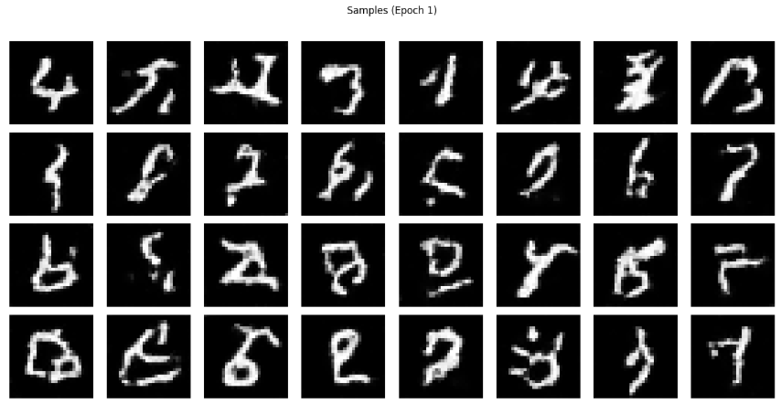
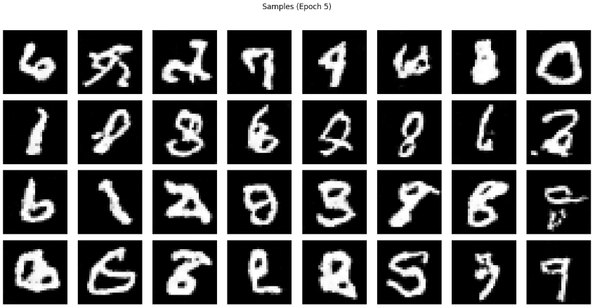
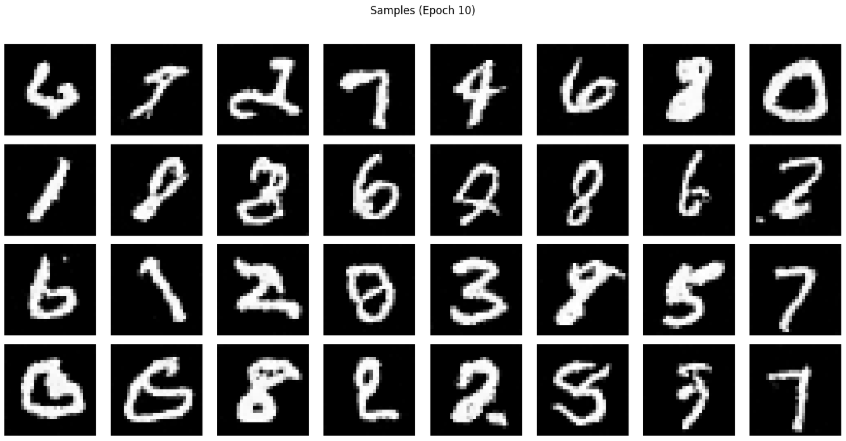
2.4 Adding Class-Conditioning to the UNet
Next, I added class conditioning so that the flow can be steered to produce specific digits on demand. Each MNIST label \(y \in \{0, \dots, 9\}\) is embedded into a learned vector and injected into the UNet alongside the time embedding. The architecture now takes inputs \((x_t, t, y)\) and produces a class-conditional velocity \(v_\theta(x_t, t, y)\).
Mechanically, the label embedding is added into the same FCBlocks used for time conditioning, so the feature maps “know” both what timestep they are at and which digit they should aim for. This is conceptually similar to how text prompts condition large diffusion models, but with a much simpler label space.
2.5 Training the Class-Conditional UNet
The training objective mirrors the unconditional flow matching loss, but now everything is conditioned on the class label:
- Sample a label \(y\).
- Sample a clean digit \(x_1\) of class \(y\) from MNIST.
- Sample \(x_0 \sim \mathcal{N}(0, I)\) and \(t \sim \mathcal{U}(0,1)\).
- Form the interpolated point \(x_t = (1 - t)x_0 + t x_1\).
\[ \mathcal{L}(\theta) = \mathbb{E}_{x_0, x_1, y, t} \Big[ \big\| v_\theta(x_t, t, y) - (x_1 - x_0) \big\|_2^2 \Big]. \]
Because the model now knows which digit class to target, the supervision is more specific: instead of just “move toward some MNIST digit,” it learns how to move specifically toward a digit of class \(y\).
2.6 Sampling from the Class-Conditional UNet
Sampling now works just like in the unconditional case, but we fix a label \(y\) and keep it constant throughout the integration:
- Pick a desired class \(y\) (e.g., “3”).
- Sample \(x_0 \sim \mathcal{N}(0, I)\).
- Integrate \(x_{k+1} = x_k + (t_{k+1} - t_k)\, v_\theta(x_k, t_k, y)\) from \(t=0\) to \(t=1\).
The resulting samples cluster strongly around the requested digit class. Below are grids of samples after 1, 5, and 10 epochs of training.
Compared to the unconditional flow model, the class-conditioned version produces noticeably crisper digits and far fewer ambiguous samples. Conditioning removes much of the multimodality the model has to juggle: instead of representing all digits at once, it can specialize its velocity field to one class at a time, which improves both quality and controllability.
2.6 No Scheduler
In the default setup, sampling uses a scheduler: a predefined sequence of timesteps \(t_0, t_1, \ldots, t_K\) that determines how we march from 0 to 1. As a final experiment, I removed the scheduler and instead used a very simple integration scheme with evenly spaced time steps and no additional time-dependent weighting or heuristics.
In other words, rather than carefully tuning how large each step in time should be, I simply divided the interval \([0,1]\) into equal pieces and applied the same Euler update at each step. This makes the sampler conceptually simpler—the network itself has to handle the varying difficulty of early vs. late times without extra help.
Removing the scheduler makes the method easier to describe and implement, but the price is slightly worse sample quality. The scheduled sampler can devote more, smaller steps to the difficult parts of the trajectory and fewer steps to the easy parts, whereas the uniform scheme spreads its capacity evenly. Still, the no-scheduler variant demonstrates that the learned flow itself is strong enough to yield digits without much sampling machinery, which is encouraging for simple applications.